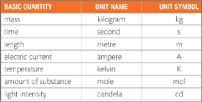
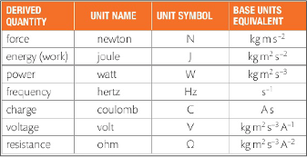
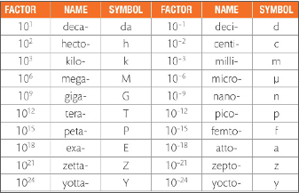
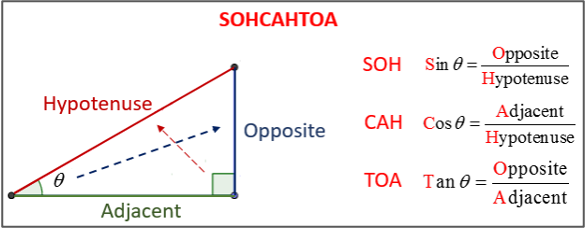

Unit 0. Units and Basic Maths
1 Standard Units and Basic Maths
1.1 Review of symbols
| Symbol | Meaning |
|---|---|
| \(\approx\) | Approximately equal |
| \(\neq\) | Not equal, different |
| \(\sum\) | Sum of a series of numbers |
| \(\prod\) | Product of a series of numbers |
| \(\int\) | Integral operation |
| \(\Delta\) | Augment, difference in an interval |
| \(\propto\) | Proportional |
| \(d\) or \(\partial\) | Derivative |
| \(\infty\) | Infinity |
| \(|x|\) | Modulus of \(x\) |
| \(\overrightarrow x\) | Vector \(x\) |
1.2 Base units
How many units do you think you really need in Physics? 10? 20? 100?… Guess
Base units: decided by scientific community, they are the minimum quantity needed to describe all other magnitudes.

SI units: the internationally decided units for each base unit, revised periodically to increase precision, ease of use, etc:
- \(kg\) (prototype)
- \(s\) (\(9·10^9 \Delta C_{ground level}\))
- \(m\) (distance light in \(\frac{1}{3}\cdot 10^8 s\))
- \(A\) (current for \(2·10^{-7}\frac{N}{m}\) 1m apart)
- \(K\) (\(273.16^{-1} waters^{s-l-g}\))
- \(mol\) (atoms \(0.012kg\), \({}^{12}C\))
- cd (\(10^{-3}\frac{W}{rad^2}\), intensity of a \(5\cdot 10^{14}Hz\) light).
Derived units: the rest, p.e.:
- \(\frac{m}{s}\) or \(m\cdot s^{-1}\)
- \(N\), Newton
- \(J\), Jules
- \(W\), Watts
- \(Hz\), Hertzs
- \(C\), Coulombs
- \(V\), Volts
- \(\Omega\), Ohms
- …

Units can be added power prefixes. You must know nano up to giga.
Careful with time above seconds! (not x10)

1.3 Maths Revision
You should know already…
\(360^{\circ} = 2\pi\) rad \(\rightarrow 30^{\circ} = 2\pi \cdot \frac{30}{360}\) rad
Vectors: \((2,3)\) means 2 in the \(x\) direction, 3 in the \(y\) direction.
Trigonometry: SOH CAH TOA

Figure 4: SOH CAH TOA Graphs:
- Gradient: slope of a graph \(m = \frac{\Delta y}{\Delta x}\)
- Line equation: \(y = ax + b\), where \(b\) is the gradient or slope.
Solve unknown formulas: P.e. solve \(u\):
- \(v^2 = u^2 + 2as \rightarrow v^2 - 2as = u^2 \rightarrow \sqrt{v^2 - 2as} = u\) done!
Combine formulas into new ones: P.e. combine these three to calculate \(F\) without having to use \(a\) or \(s\).
- \(F = ma\); \(a= \frac{v^2 - u^2}{2s}\); \(s = \frac{d}{t}\) then
- \(F = \frac{m(v^2 - u^2)}{2s}\) then
- \(F = \frac{m(v^2 - u^2)}{2\frac{d}{t}} = F = \frac{mt(v^2 - u^2)}{2d}\).